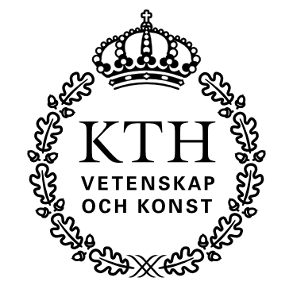

-
Technical Lead for LLM Training project (Jan 2024 – Ongoing)
As a RISE research scientist, I am the tech-lead for a 20-person team training Ericsson's internal code internal code LLMs. This project is in collaboration with Mistral, where we train 100B+ parameter models for code generation and understanding.

-
PhD in Computational Linguistics (Jan 2025 – Sep 2026)
Enrolled in a fast-track PhD program at Uppsala University. My focus is on training algorithms for large language models and neural networks, with a scheduled defense in 2026.

-
Research Scientist (Jan 2018 – Ongoing)
My current work place, and sponsor of my PhD studies, is the Research Institutes of Sweden in Stockholm. Here, I focus on fundamental research and publishing at high-tier venues, often in collaboration with the good folks at Google DeepMind.

-
BsC in Computer Science & MsC in Robotics (Aug 2018 – Jun 2024)
Studied computer science and machine learning at the KTH Royal Institute of Technology in Stockholm. Some years later I also
completed a fast-track one-year master's in Robotics and Automation at University West.
